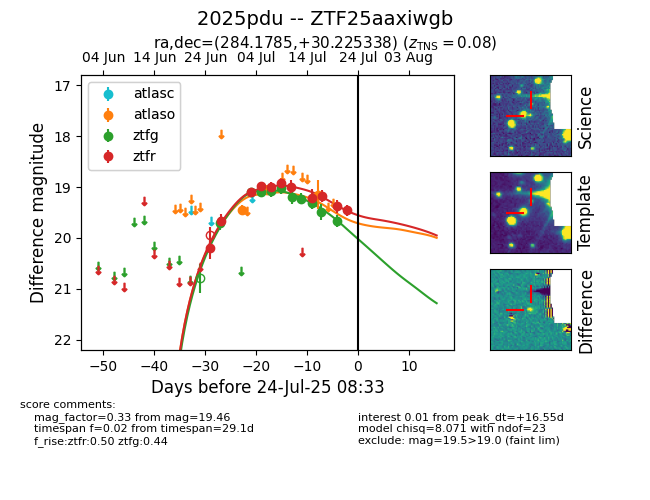

Target ZTF25aaxiwgb at 2025-07-24 08:33, see:
FINK: fink-portal.org/ZTF25aaxiwgb
Lasair: lasair-ztf.lsst.ac.uk/objects/ZTF25aaxiwgb
ALeRCE: alerce.online/object/ZTF25aaxiwgb
TNS: wis-tns.org/object/2025pdu
YSE: ziggy.ucolick.org/yse/transient_detail/2025pdu
alt names
ZTF25aaxiwgb (ztf,fink)
2025pdu (tns,yse)
coordinates:
equatorial (ra, dec) = (284.1785,+30.22534)
galactic (l, b) = (60.8174,+12.23028)
photometry
last atlaso=19.15, ztfg=19.66, ztfr=19.46
4 atlaso, 10 ztfg, 11 ztfr detections
